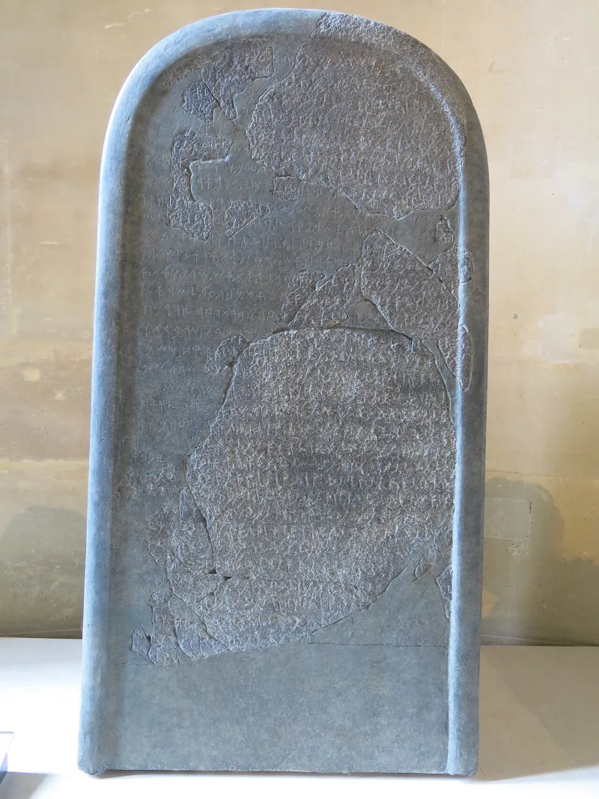
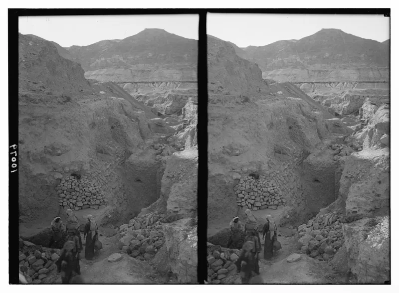
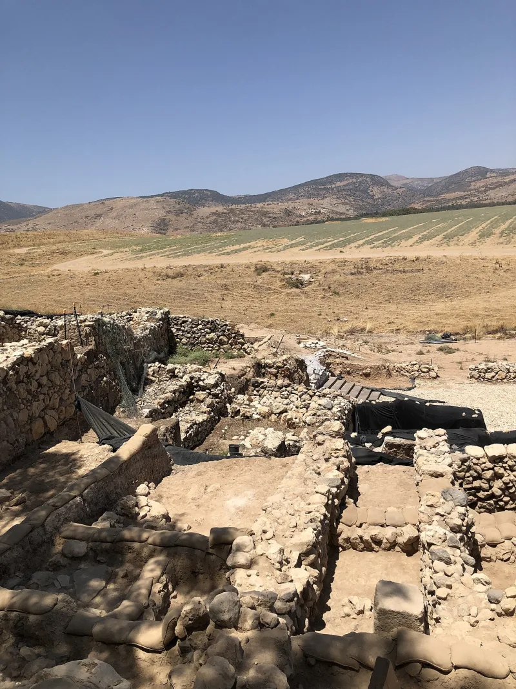

Serious philosophers argue this both ways. Say so before your friend does.
Deuteronomy 20:16-18 and 1 Samuel 15, as written, command total destruction. Children included.
Do not soften that before reading it. The person in front of you has usually read it already.
One is war rhetoric. "Utterly destroyed...
left none remaining" was conventional overstatement. Joshua 10-11 reports whole cities wiped out whose people are alive and numerous in Judges 1.
Other ancient texts brag the same way, such as Merneptah's "Israel is wasted, his seed is not." Paul Copan and Matthew Flannagan argue the commands target military strongholds and dispossession. Two is the Bible's own main verb, "drive out," and gradually: "little by little" (Exodus 23:29-30), after four hundred years of forbearance (Genesis 15:16).
Three: Nicholas Wolterstorff reads the accounts as heroic overstatement, never meant literally. Four: some accept divine prerogative and bite the bullet, while others, such as Eric Seibert and Peter Enns, say the texts show Israel's assumptions about God rather than God himself.
That last move costs a great deal in biblical authority. Note too that archaeology's minimal-conquest picture, with most sites showing no destruction layer, undercuts a literal genocide reading.
No option here is free. Say which one you hold, and what it costs you.
1 Samuel 15 is not siege rhetoric. Saul is condemned for killing too few, and "infant and nursing child" is spelled out.
Hyperbole readings look motivated, applied exactly where the morality is unbearable and nowhere else. A method that elastic can soften anything, and then the text no longer constrains its readers.
Calling it dispossession instead of killing merely relabels ethnic cleansing. And the sharpest form is in-house.
Randal Rauser, a Christian thinker, puts it this way. If your moral sense is good enough to recognise the God of the resurrection as good, it is good enough to recognise commanded infant-killing as evil.
You cannot switch it off when the text needs rescuing.
Contested, with no pretence otherwise. This is the hardest text-level objection Christianity faces.
What this case offers is an honest map, not a sold exit. Never quick-answer it.
Acknowledge the horror first, because the skeptic's moral reaction is doing exactly what Romans 2 says it should. Then lay out the options with their prices.
"That passage is genuinely hard, and I won't pretend otherwise. Can I show you the options and what each one costs?"



1 Samuel 15 names the nursing child, and Saul is blamed for killing too few.
The steelmanned objection runs like this. 1 Samuel 15 is not siege rhetoric. Saul is condemned for killing too few, and 'infant and nursing child' is spelled out.
The hyperbole reading looks motivated. It is applied just where the morality is unbearable, and nowhere else. A method loose enough to soften a command to wipe out a people can soften anything. That gives up the claim that the text holds its readers to anything. Calling the ban 'dispossession' only renames ethnic cleansing.
Then there is the charge from inside, pressed by the Christian thinker Randal Rauser as much as by atheists. If your moral sense is good enough to see that the God of the resurrection is good, it is good enough to see that killing infants on command is evil. You cannot switch it off when the text needs saving.
Contested — the hardest text there is, so show the options and their costs.
Contested, with no pretence otherwise. This is the hardest text-level objection Christianity faces, and the entry's value is showing the map honestly rather than selling one exit.
Never quick-answer this in conversation. Acknowledge the horror first. The skeptic's moral reaction is working exactly as Romans 2 says it should. Then present the options with their costs. The weight this carries for the positive case is low. This is pure defence, and modelling honest defence is the point.